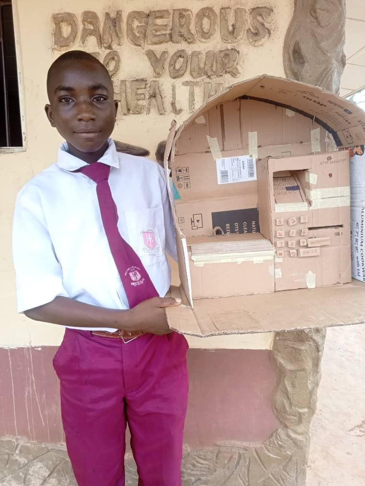
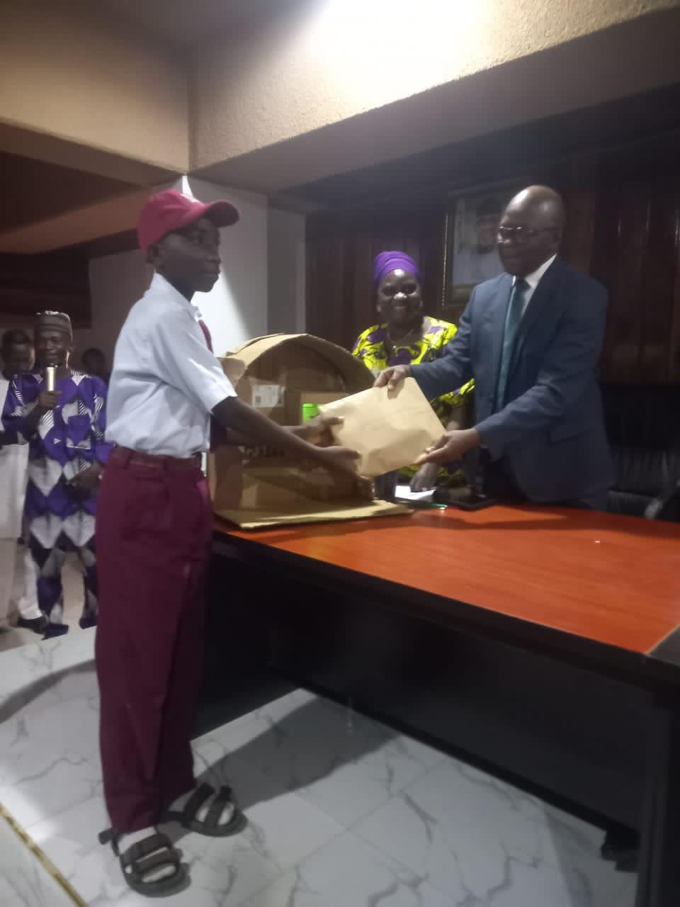

In many places, innovation doesn’t begin in a lab. It begins with whatever is available. For Ayodele Daniel Babalola, that meant scraps. Wires, reused components, improvised materials—pieces that most people would overlook. But in his hands, they became something else. He built an Automated Teller Machine.
Where It Started
During a Tech with Khalid Foundation (TWiK) session, students were given a simple challenge: build something Not just to learn but to apply. For many, it was an exercise. For Ayodele, it became an exploration. He began to think about systems people use every day. One stood out, ATMs. Machines trusted to handle money, process requests, and deliver results instantly. Then came the real question:
How does it actually work—and can it be built?
"When students are given the chance to explore, they begin to build beyond what is expected."
Building Without Ideal Conditions
There was no fully equipped lab. No advanced tools. Just determination and whatever materials he could find. Step by step, Ayodele began to translate what he had learned into a working system—understanding inputs, processing logic, and outputs. It wasn’t perfect. It wasn’t polished. But it worked.


Ayodele building and refining his ATM system during a TWiK session. Photo: Tech with Khalid Foundation.
When Effort Meets Recognition
What started as an exercise didn’t stay there. Ayodele’s work began to draw attention. His project was spotlighted by the Ogun State Commissioner for Education Prof. Abayomi Arigbabu — an acknowledgment that what he built went beyond a school exercise. In Iperu Remo, his work also earned recognition and awards, placing him among young innovators whose ideas are beginning to stand out.
"Recognition follows when opportunity meets preparation."
What This Story Represents
Ayodele’s journey reflects something deeper than a single project. It shows what becomes possible when students are given space to think, explore, and build—even without ideal conditions. Across many communities, students are already experimenting—using whatever they can find, building from scraps, and learning in unconventional ways. The limitation is not potential. It is access.
"Background should never define potential."
The Role of Tech with Khalid Foundation
At Tech with Khalid Foundation (TWiK), the goal is not just to teach technology. It is to create an environment where students can take ideas seriously and turn them into something real. Because when given the right exposure, students don’t just learn. They build. They test. They create. Ayodele had that opportunity and he turned it into something that reached beyond his classroom.
What Comes Next
There are many more students like Ayodele. Curious. Capable. Ready to build. Some are already working on ideas—using limited tools, waiting for the chance to do more. What they need is access. Access to devices. Access to guidance. Access to opportunity.
Support the Next Builder
More students are ready to learn, build, and solve problems.
- Laptops and digital devices
- Hands-on training and mentorship
- Opportunities to turn ideas into working solutions
Because behind every project like this, there are many more waiting for the chance to be seen.